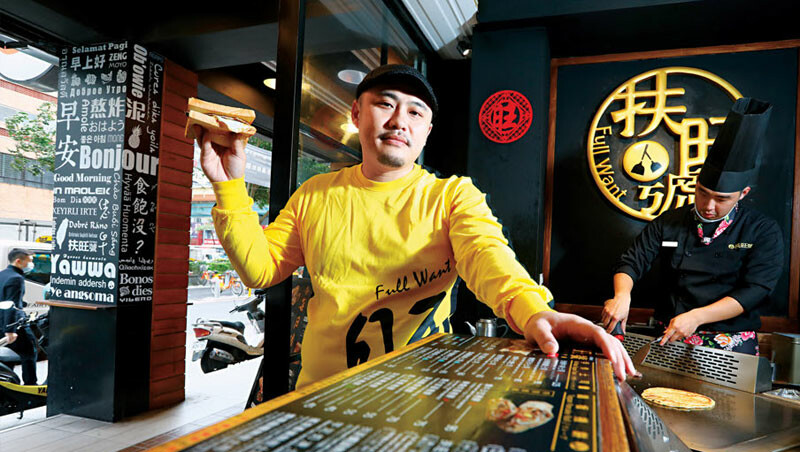

心得
心得

這次自己完成了4頁網頁！
雖然都只是差不多的東西，但還是小有難度。
很常會連結跳不出來之類的，真的會做到有點小生氣....
不過很高興我還是完成了4頁網頁，蠻有成就感的！！
這次做的4間餐廳，都是出自於同一個老闆！
最早的香連鐵板燒、周照子鐵板燒、甘妹弄堂、扶瑞號
除了第一間香連鐵板燒，其餘三間都是由老闆潘威達創立的
分別用了祖母周照子，外婆陳甘妹，爸爸潘扶旺的名字下去開店
潘威達他不但花7年時間，取得台師大餐旅博士學位，
更動手改造家裡的鐵板燒餐廳，還自創多個餐飲品牌，
不斷印證理論和實務的差距，直到2017年底，
創立的「扶旺號」鐵板三明治，授權給馬來西亞、澳門地區代理商，將夜市美食推向國際市場。
很剛好這次要做有關餐飲的報告，所以這次就選擇用厲害的潘威達先生的故事來做。
扶旺號
香連鐵板燒
周照子鐵板燒
甘妹弄堂